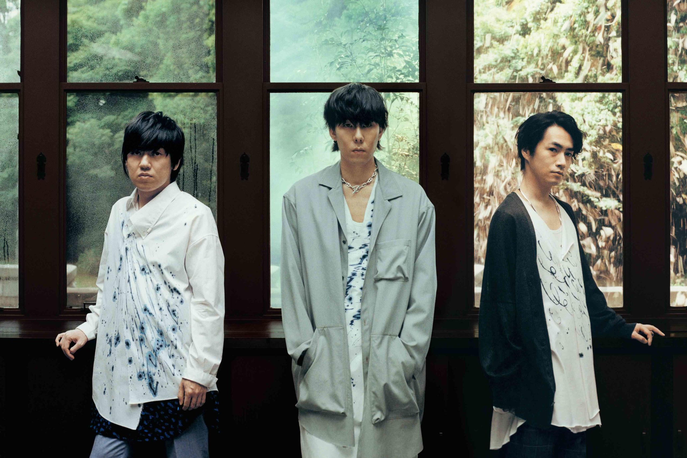

於2001年神奈川縣組成、2005年正式出道，由主唱野田洋次郎、吉它手桑原彰、貝斯武田祐介以及鼓手山口智史為主的四人樂團，樂團名「RADWIMPS」更有「激進的膽小鬼」這樣反差的含意。 而RADWIMPS的每首歌曲皆是由主唱野田洋次郎包攬作詞與作曲，每句歌詞都寫入了野田的內心，曲中總是能感受到他想對重要之人傳遞的內容，其中也不乏對於現代社會的諷刺、占星等方向，也經常能在歌曲中看見關於生命的議題。
|  |
主要成員 野田洋次郎 擔當主唱、吉他手及作詞作曲 桑原彰 擔當吉他手及領隊 武田佑介 擔當貝斯手 山口智史 擔當鼓手， 由於2015年因「局部肌張力不全症」惡化而宣布無限期修養，僅掛名作為樂隊一份子活動。而之後樂隊的活動使用應援鼓手補位[ 森瑞希 支援鼓手。 繪野匡史 支援鼓手 |